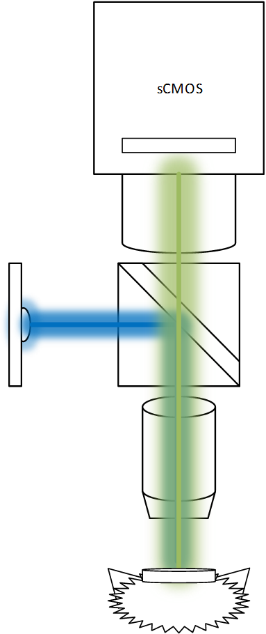

dissertation presentation Development & Application of a Closed-Loop Continuous Optical Neural Interface
Development & Application of a Closed-Loop Continuous Optical Neural Interface
Procedures for real-time image processing, neural signal extraction, and application to closed-loop control using wide-field Ca2+ fluorescence with awake behaving animals
April 13, 2017
Mark Bucklin
Lab Contributions
- Behavior Box for spatial discrimination study
- Mouse tracking software for Parkinson's model
- Virtual Reality presentation and motion tracking on spherical treadmill
- Microscopes for fluourescence imaging
- Image acquisition software
- Video processing software
Outline
- Using Wide-field Fluourescence Microscopy to image brain activity
- Video processing: Batch processing Pipeline
- Storage issue: Stream processing Graph
- Coding for the Future
Imaging Brain Activity in Mice with a Wide-field Fluourescence Microscope
- Sensor: GCaMP
- Fluourescence change when calcium enters cell
- Virus
- Delivers the GCaMP sensor
- Blue LED
- sensor excitation
- Optical Filters
- excitation filter + dichroic mirror + emission filter
- scientific-CMOS Camera
Microscope and Mouse Securing Apparatus (headplate holder)

Image Processing
- Noise filtering
- time-series decomposition
- Motion Correction
- Cell Segmentation
- Cell signal extraction: in manageable size
Motion Correction
- approaches to find displacement
- Lucas-Kanade iterative search
- Phase correlation, aka normalized cross correlation
- Feature Matching
- Detect features (i.e. corners)
- Triangulate best match
Cell Segmentation
- Adaptive thresholding
- Morphological condensation
- Temporal clustering with reduced feature descriptor of cells
Functional connectivity network behavior and behavioral relevance
- Connections across source
- Connections across time
3 Reasons we need to consider the future NOW
1. Storage CRISIS: Data Volume
- Traditional in science labs to store raw data
- 1 gb/s
- current capitalization 2 MB/s (16 mb/s)
- Storage capacity is fixed
- cumulative
2. Information Loss: Opportunites to use expanded perspectives rather than reduced form
- Contrast
- Linear Scaling
- Lookup Tables
- Spatial and Temporal Filtering
- "Feature" images
- Gradients
- Surface Curvature
3. Trend Sensor Performance and Ubiquity are Exploding
Two core innovations in available technology
- Molecular Engineering
- (i.e. GCaMP)
- Cameras
- scientific CMOS
- inexpensive "machine vision" cameras
- (so is software)
Feature Extraction is fast
- "Feature" images (temporally independent)
- Gradients
- Surface Curvature
- Long Term Memory -> Storage structure
- Statistics changes (single pixel)
- Mutual information changes (inter-pixel)
- Continuity
Graphs identifying network connectivity can be built/updated online
- Think
- Netflix
Computing Power and Open Software
- Computing Power and Connectivity
- Remote Clusters (AWS)
- Graphics Processing Units (NVIDIA GTX)
- Embedded Units (NVIDIA Tegra X2)
- Well developed libraries
- SciFio, OpenImageIO, BioFormats
- OpenCV, OpenVX
- GStreamer (much better)
- Shader Language extensions (GLSL, HLSL, Halide)
- CUDA
- Scalable Computing frameworks
What is the way forward
DataFlow processing model
- Tensorflow
Standard graphics solutions
- FFmpeg
- GStreamer
Compression is everything
- Consciousness
Map-Reduce -> Dataflow Processing
- Actors model
- Petri Nets
- Graph Processing
- i.e. Tensorflow
(for my parents who may wish to know what MATLAB looks like)
Incremental Update of Statistics
function [m1,m2,m3,m4,fmin,fmax] = updateStatistics(x,m1,m2,m3,m4))
n = n + 1;
% GET PIXEL SAMPLE
f = F(rowIdx,colIdx,k);
% PRECOMPUTE & CACHE SOME VALUES FOR SPEED
d = single(f) - m1;
dk = d/n;
dk2 = dk^2;
s = d*dk*(n-1);
% UPDATE CENTRAL MOMENTS
m1 = m1 + dk;
m4 = m4 + s*dk2*(n.^2-3*n+3) + 6*dk2*m2 - 4*dk*m3;
m3 = m3 + s*dk*(n-2) - 3*dk*m2;
m2 = m2 + s;
% UPDATE MIN & MAX
fmin = min(fmin, f);
fmax = max(fmax, f);
end
```
---
#### Incremental Update of Statistics
##### Extract Feature
```matlab
function [dm1,dm2,dm3,dm4] = getStatisticUpdate(x,m1,m2,m3,m4)
% COMPUTE DIFFERENTIAL UPDATE TO CENTRAL MOMENTS
dm1 = dk;
m1 = m1 + dm1;
dm4 = s*dk2*(n^2-3*n+3) + 6*dk2*m2 - 4*dk*m3;
dm3 = s*dk*(n-2) - 3*dk*m2;
dm2 = s;
m2 = m2 + dm2;
% NORMALIZE BY VARIANCE & SAMPLE NUMBER -> CONVERSION TO dVar, dSkew, dKurt
dm2 = dm2/max(1,n-1);
dm3 = dm3*sqrt(max(1,n))/(m2^*5);
dm4 = dm4*n/(m2^2);
end
[dm1,dm2,dm3,dm4] = arrayfun(@getStatisticUpdate(x,m1,m2,m3,m4)
[dm1,dm2,dm3,dm4] = arrayfun(@getStatisticUpdate(rowidx,colidx)
Acknowledgements
The support and patience I have received from my committee has gone far beyond what should be expected of anyone. I can't thank you enough.
- Xue Han, Ph.D.
- Jerome Mertz, Ph.D.
- Ian Davis, Ph.D.
- Tom Bifano, Ph.D.
- David Boas, Ph.D.